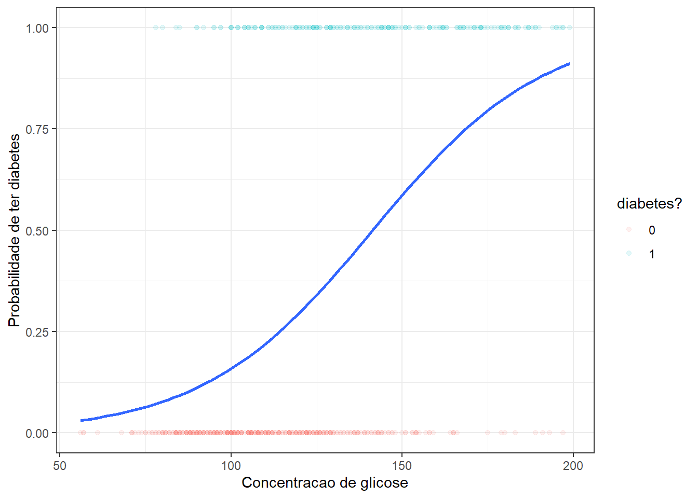
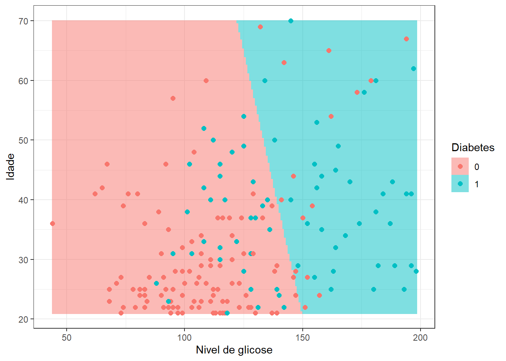
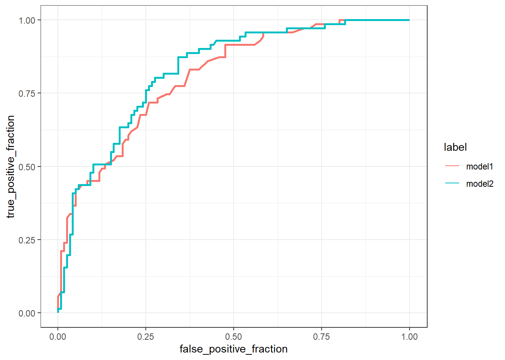
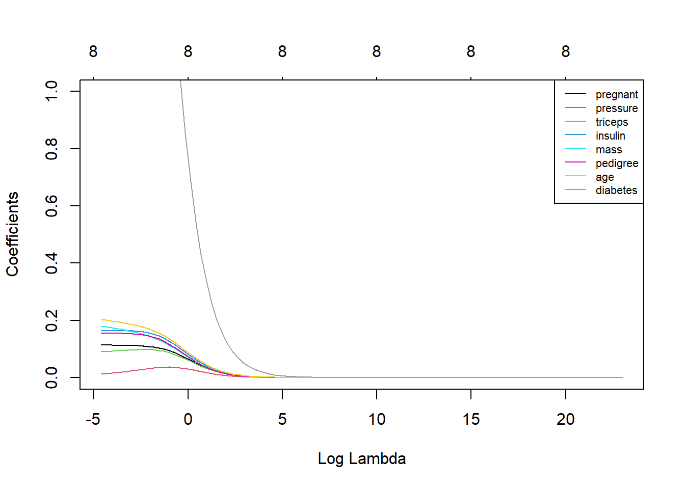
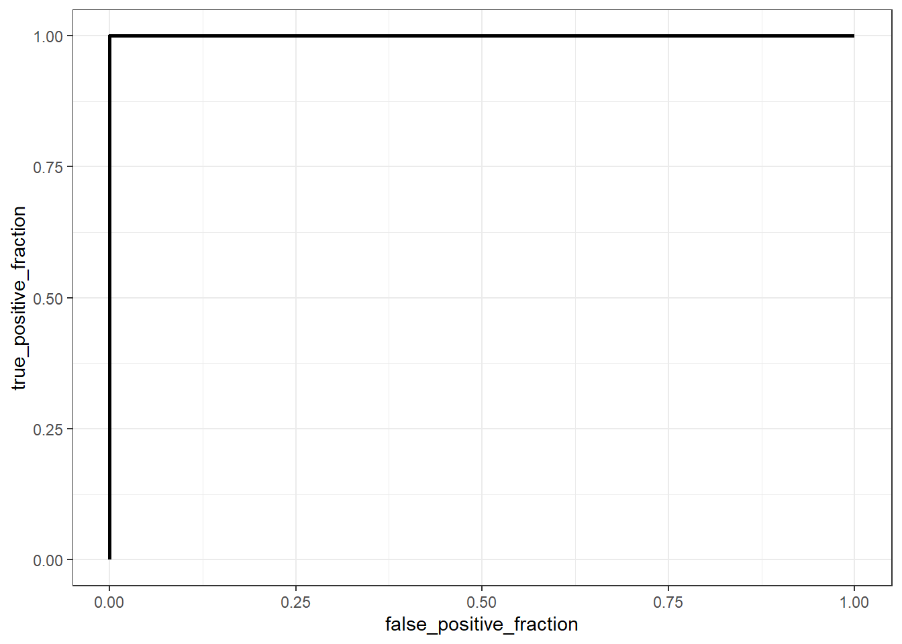

library(gt)
library(mlbench)
library(dplyr)
library(ggplot2)
library(glmnet)
library(plotROC)Laboratório 10 - Classificação via regressão logística
Previsão se a pessoa tem ou não diabetes dado o nível de glicose: regressão logística simples
Carregando pacotes.
Lendo os dados.
data(PimaIndiansDiabetes2)
# head(PimaIndiansDiabetes2)
data <- PimaIndiansDiabetes2 |>
select(glucose,diabetes)
head(data) |> gt()| glucose | diabetes |
|---|---|
| 148 | pos |
| 85 | neg |
| 183 | pos |
| 89 | neg |
| 137 | pos |
| 116 | neg |
Filtrar dados para remover valores NA.
data <- data %>% filter(!is.na(glucose), !is.na(diabetes))Codificando a resposta em 0 e 1.
data$diabetes <- ifelse(data$diabetes == "pos", 1, 0)Dividindo dados para treinamento e teste.
set.seed(7)
treino <- sample(nrow(data), 0.75*nrow(data))
dados_treino <- data[treino,]
dados_test <- data[-treino,]Modelo de regressão logística multinomial simples.
model1 <- glm(diabetes ~ glucose, data = dados_treino, family = binomial)
summary(model1)
Call:
glm(formula = diabetes ~ glucose, family = binomial, data = dados_treino)
Coefficients:
Estimate Std. Error z value Pr(>|z|)
(Intercept) -5.711728 0.510506 -11.19 <2e-16 ***
glucose 0.040409 0.003947 10.24 <2e-16 ***
---
Signif. codes: 0 '***' 0.001 '**' 0.01 '*' 0.05 '.' 0.1 ' ' 1
(Dispersion parameter for binomial family taken to be 1)
Null deviance: 734.03 on 571 degrees of freedom
Residual deviance: 591.50 on 570 degrees of freedom
AIC: 595.5
Number of Fisher Scoring iterations: 4Visualizando modelo.
ggplot(dados_treino, aes(glucose, diabetes)) +
geom_point(aes(color = as.factor(diabetes)), alpha = 0.1) +
geom_smooth(method = "glm",
method.args = list(family = "binomial"),
se = F) +
labs(x = "Concentracao de glicose",
y = "Probabilidade de ter diabetes",
color = "diabetes?") +
theme_bw()`geom_smooth()` using formula = 'y ~ x'
Previsão e avaliação do modelo.
prob_pred <- predict(model1, type = 'response', newdata = dados_test)
y_pred <- ifelse(prob_pred > 0.5, 1, 0)
head(y_pred) 8 12 19 20 23 31
0 1 0 0 1 0 Matriz de confusão.
cm <- table(y = dados_test$diabetes, pred = y_pred)
cm pred
y 0 1
0 105 15
1 36 35Acuracidade.
sum(cm[1,1],cm[2,2])/sum(cm)[1] 0.7329843Previsão se a pessoa tem ou não diabetes em função do nível de glicose no sangue e da idade: regressão logística múltipla
Leitura dos dados.
data2 <- PimaIndiansDiabetes2 |>
select(glucose,diabetes, age)
head(data2) |> gt()| glucose | diabetes | age |
|---|---|---|
| 148 | pos | 50 |
| 85 | neg | 31 |
| 183 | pos | 32 |
| 89 | neg | 21 |
| 137 | pos | 33 |
| 116 | neg | 30 |
Pré-processamento inicial.
data2 <- data2 %>% filter(!is.na(glucose), !is.na(diabetes))
data2$diabetes <- ifelse(data2$diabetes == "pos", 1, 0)
set.seed(7)
treino <- sample(nrow(data2), 0.75*nrow(data2))
dados_treino2 <- data2[treino,]
dados_test2 <- data2[-treino,]Modelagem.
model2 <- glm(diabetes ~ scale(glucose) + scale(age), data = dados_treino2, family = binomial)
summary(model2)
Call:
glm(formula = diabetes ~ scale(glucose) + scale(age), family = binomial,
data = dados_treino2)
Coefficients:
Estimate Std. Error z value Pr(>|z|)
(Intercept) -0.8158 0.1044 -7.814 5.55e-15 ***
scale(glucose) 1.1456 0.1181 9.701 < 2e-16 ***
scale(age) 0.2568 0.1002 2.563 0.0104 *
---
Signif. codes: 0 '***' 0.001 '**' 0.01 '*' 0.05 '.' 0.1 ' ' 1
(Dispersion parameter for binomial family taken to be 1)
Null deviance: 734.03 on 571 degrees of freedom
Residual deviance: 584.94 on 569 degrees of freedom
AIC: 590.94
Number of Fisher Scoring iterations: 4Plotando o modelo.
grid <- expand.grid(glucose = seq(min(dados_test2$glucose),
max(dados_test2$glucose), length=200),
age = seq(min(dados_test2$age),
max(dados_test2$age), length=200))
prob_grid <- predict(model2, type = 'response', newdata = grid)
y_pred_grid <- ifelse(prob_grid > 0.5, 1, 0)
grid$diabetes <- as.factor(y_pred_grid)
ggplot() +
geom_raster(aes(x = grid$glucose, y = grid$age, fill = grid$diabetes),
alpha = .5) +
geom_point(aes(x = dados_test2$glucose, y = dados_test2$age,
color = as.factor(dados_test2$diabetes)), size = 2) +
labs(x = "Nivel de glicose", y = "Idade",
fill = "Diabetes", col = "Diabetes") + theme_bw()
Previsão e avaliação do modelo.
prob_pred2 <- predict(model2, type = 'response', newdata = dados_test2)
y_pred2 <- ifelse(prob_pred2 > 0.5, 1, 0)
head(y_pred2) 8 12 19 20 23 31
0 1 0 0 1 0 Matriz de confusão.
cm2 <- table(y = dados_test2$diabetes, pred = y_pred2)
cm2 pred
y 0 1
0 105 15
1 35 36Acuracidade.
sum(cm2[1,1],cm2[2,2])/sum(cm2)[1] 0.7382199Curva ROC comparando os dois modelos.
data_roc <- data.frame(y=c(dados_test$diabetes,
dados_test$diabetes),
prob=c(prob_pred,prob_pred2),
label=c(rep("model1",
nrow(dados_test)),
rep("model2",
nrow(dados_test))))ggplot(data_roc,
aes(d = y,
m = prob,
color=label)) + geom_roc(n.cuts = 0) + theme_bw()
Previsão se a pessoa tem ou não diabetes em função de diversas variáveis de saúde do indivíduo: Regressão logística múltipla com mais variáveis
Leitura dos dados.
data3 <- PimaIndiansDiabetes2
data3 <- na.omit(data3)
head(data3) |> gt()| pregnant | glucose | pressure | triceps | insulin | mass | pedigree | age | diabetes |
|---|---|---|---|---|---|---|---|---|
| 1 | 89 | 66 | 23 | 94 | 28.1 | 0.167 | 21 | neg |
| 0 | 137 | 40 | 35 | 168 | 43.1 | 2.288 | 33 | pos |
| 3 | 78 | 50 | 32 | 88 | 31.0 | 0.248 | 26 | pos |
| 2 | 197 | 70 | 45 | 543 | 30.5 | 0.158 | 53 | pos |
| 1 | 189 | 60 | 23 | 846 | 30.1 | 0.398 | 59 | pos |
| 5 | 166 | 72 | 19 | 175 | 25.8 | 0.587 | 51 | pos |
Normalizando dados.
data3_sum <- data3[,-9] |>
summarise(across(everything(),
list(mean, sd)))
data3_sum |> gt()| pregnant_1 | pregnant_2 | glucose_1 | glucose_2 | pressure_1 | pressure_2 | triceps_1 | triceps_2 | insulin_1 | insulin_2 | mass_1 | mass_2 | pedigree_1 | pedigree_2 | age_1 | age_2 |
|---|---|---|---|---|---|---|---|---|---|---|---|---|---|---|---|
| 3.30102 | 3.211424 | 122.6276 | 30.86078 | 70.66327 | 12.49609 | 29.14541 | 10.51642 | 156.0561 | 118.8417 | 33.08622 | 7.027659 | 0.5230459 | 0.345488 | 30.8648 | 10.20078 |
data3[,1:8] <- scale(data3[,1:8])Pré-processamento inicial.
data3$diabetes <- ifelse(data3$diabetes == "pos", 1, 0)
set.seed(7)
treino <- sample(nrow(data3), 0.75*nrow(data3))
dados_treino3 <- data3[treino,]
dados_test3 <- data3[-treino,]Modelagem.
model3 <- glm(diabetes ~., data = dados_treino3, family = binomial)
summary(model3)
Call:
glm(formula = diabetes ~ ., family = binomial, data = dados_treino3)
Coefficients:
Estimate Std. Error z value Pr(>|z|)
(Intercept) -0.97255 0.16223 -5.995 2.03e-09 ***
pregnant 0.29697 0.20192 1.471 0.14136
glucose 1.01387 0.19748 5.134 2.84e-07 ***
pressure -0.10530 0.16376 -0.643 0.52021
triceps 0.08522 0.19986 0.426 0.66981
insulin -0.03437 0.16989 -0.202 0.83967
mass 0.55211 0.21340 2.587 0.00968 **
pedigree 0.48835 0.17427 2.802 0.00508 **
age 0.33989 0.20247 1.679 0.09321 .
---
Signif. codes: 0 '***' 0.001 '**' 0.01 '*' 0.05 '.' 0.1 ' ' 1
(Dispersion parameter for binomial family taken to be 1)
Null deviance: 374.27 on 293 degrees of freedom
Residual deviance: 268.13 on 285 degrees of freedom
AIC: 286.13
Number of Fisher Scoring iterations: 5Previsão e avaliação do modelo.
prob_pred3 <- predict(model3, type = 'response', newdata = dados_test3)
y_pred3 <- ifelse(prob_pred3 > 0.5, 1, 0)
head(y_pred3) 9 26 28 41 44 64
1 0 0 1 1 0 Matriz de confusão.
cm3 <- table(y = dados_test3$diabetes, pred = y_pred3)
cm3 pred
y 0 1
0 61 5
1 13 19Acuracidade.
sum(cm3[1,1],cm3[2,2])/sum(cm3)[1] 0.8163265Regressão logística rígida para o exemplo anterior
Pré-processamento inicial.
X <- model.matrix(glucose ~ ., data3)[,-1]
y <- data3$diabetes
X.treino <- X[treino,]
y.treino <- y[treino]Grid para lambda.
grid <- 10^seq(10, -2, length = 100)Regressão rígida.
rid1 <- glmnet(X.treino, y.treino,
family = "binomial",
alpha = 0,
lambda = grid)Plotando coeficientes versus lambda.
plot(rid1, xvar = "lambda", col = 1:8, ylim=c(0,1))
legend("topright", lwd = 1, col = 1:8,
legend = colnames(X.treino), cex = .7)
Obtendo lambda ótimo via cv e grid search.
rid.cv <- cv.glmnet(X.treino, y.treino, alpha = 0)
bestlam <- rid.cv$lambda.min # selecionando lambda otimo
bestlam[1] 0.04714045Previsão para teste e matriz de confusão.
prob_pred4 <- predict(rid1, s = bestlam,
type = 'response',
newx = X[-treino,])
rid1.pred <- ifelse(prob_pred4 > 0.5, 1, 0)
table(y=y[-treino], pred=rid1.pred) pred
y 0 1
0 66 0
1 0 32Curva ROC.
test_res <- data.frame(y = y[-treino],
pred = rid1.pred[,1],
prob = prob_pred4[,1])
ggplot(test_res,
aes(d = y,
m = prob)) + geom_roc(n.cuts = 0) + theme_bw()